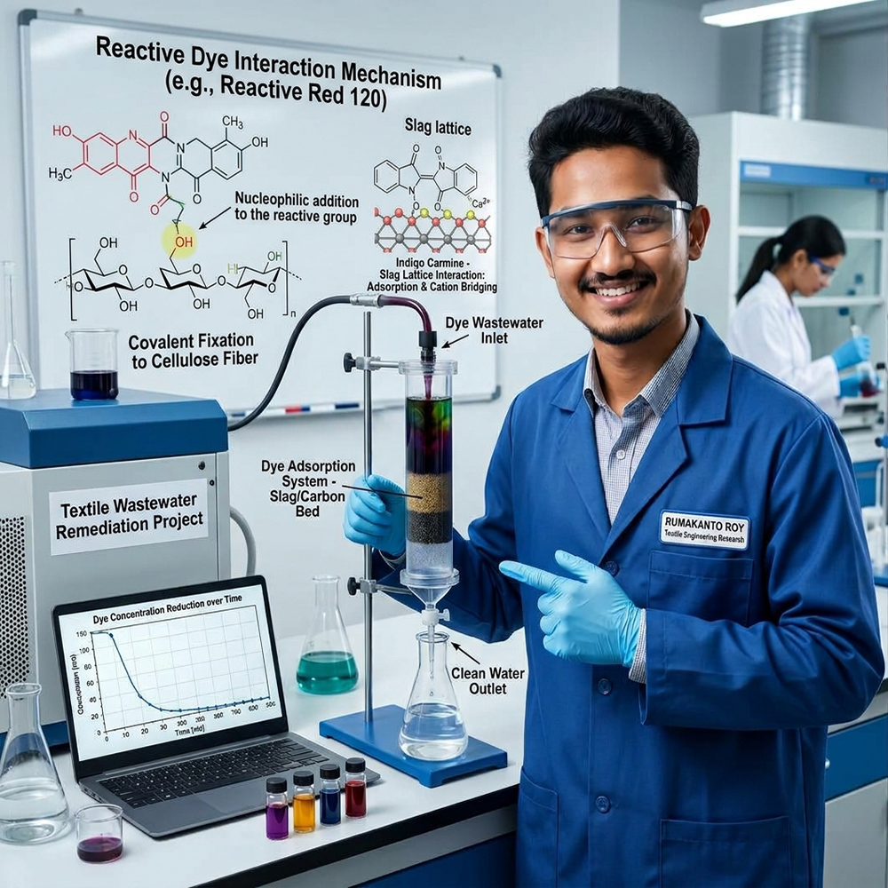

Bioactive nanofibers for wound dressing
Electrospun PVA nanofibers with cellulose nanocrystals and Dalbergia reniformis leaf extract for wound healing. Journal and conference papers submitted.
Textile Engineering Student, DUET
I am Rumakanto Roy, a Textile Engineering student interested in wastewater treatment, adsorption, slag, environmental chemistry and other textile related topics.

I am a B.Sc. student in Textile Engineering at Dhaka University of Engineering & Technology (DUET), Gazipur. My research interests are wastewater treatment, adsorption, slag and environmental chemistry.
I have taught textile engineering students, co-authored a journal paper and a conference paper (both submitted), and won poster presentation competitions at national level.
Dhaka University of Engineering & Technology (DUET), Gazipur. Last semester GPA 3.38 / 4.00.
Textile Institute, Dinajpur. CGPA 3.91 / 4.00.
Pirganj Pilot High School, Thakurgaon. GPA 5.00 / 5.00.
Electrospun PVA nanofibers with cellulose nanocrystals and Dalbergia reniformis leaf extract for wound healing. Journal and conference papers submitted.
My main research focus: removing dyes from textile effluent by adsorption, including the use of industrial slag, and the environmental chemistry behind it.
Presented research posters at national inter-university competitions and won two championships and one second place.
Photos from my lab work and events. Tap a photo to see it larger.
Likunuzzaman, Md. Harun-Or-Rashid, Rumakanto Roy, Joy Roy Shimon, Mohammad Abul Hasan Shibly, Shahjalal Khandaker. Synergistic Integration of Cellulose Nanocrystals and Dalbergia reniformis Leaves Extract in Electrospun PVA Nanofibers for Bioactive Wound Dressing Application. Results in Engineering. Submitted
Likunuzzaman, Md. Harun-Or-Rashid, Rumakanto Roy, Joy Roy Shimon, Mohammad Abul Hasan Shibly, Shahjalal Khandaker. Bioactive Electrospun PVA/CNC Nanofibrous Mats Incorporating Dalbergia reniformis Leaves Extract for Wound Healing Applications. International Conference on Engineering and Frontier Technologies 2026. Submitted
Champion, Poster Presentation, NATURE FEST 2025, NCI Jahangirnagar Student Branch.
Champion, Poster Presentation, Textile Day 2.0, BUBT Textile Club.
2nd position, Poster Presentation, IEEE BrainFest 2025, IEEE BUP Student Branch.
Poster Presentation, Texverse 2025 Inter-University Textile Innovation and Research Competition, BUTEX Science Club.
I am open to research collaborations, internships and questions about my work.
Email: royrumakanto@gmail.com
Contact number: +880 1521-785793
Department of Textile Engineering, DUET, Gazipur